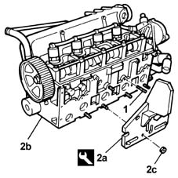
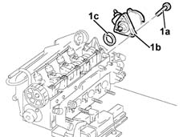
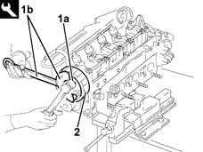
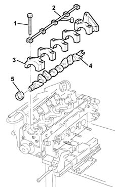
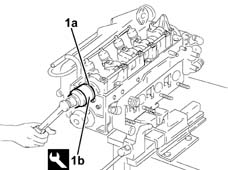

1036B14 overhead camshaft - r r on vehicle - with cylinder head removed
- Path
- Procedures > 10 ENGINE UNIT > 1036 TIMING SYSTEM > 1036B overhead camshaft > 1036B14 overhead camshaft - r r on vehicle - with cylinder head removed
- Kind
- repair procedure (removal / refitting; the operation number is the code)
- Applies to
- engines: 1.9 JTD 8V; all production periods
- Interactive page
- https://sloeber94.github.io/elrnDB-fMltpl/en/#/2892355
Applies to: engines: 1.9 JTD 8V; all production periods
 Removing
Removing
 Refitting
RefittingTake the cylinder head to the workbench.
1. Use anut and locknut to unscrew the stud.
2. Fit tool (2a) to cylinder head (2b) and secure using nuts (2c).
 | Name | Country |
|---|---|---|
2a | Support | 1.860.470.000 |

Applies to: engines: 1.9 JTD 8V; all production periods
1. Undo the bolts (1a) and remove the vacuum unit (1b) complete with O-Ring (1c).

Applies to: engines: 1.9 JTD 8V; all production periods
1. Undo the bolt (1a) for the driven pulley using the tools (1b).
| Name | Country |
|---|---|---|
1b | Support for counter-torque | 1.860.831.000 |
2. Remove the driven pulley.

Applies to: engines: 1.9 JTD 8V; all production periods
1. Undo the camshaft cap bolts.
2. Remove the camshaft support lubrication pipe.
3. Remove the camshaft caps.
4. Remove the camshaft.
5. Remove the camshaft front oil seal.

Applies to: engines: 1.9 JTD 8V; all production periods
Refitting
RemovingFit the camshaft.
Fit the camshaft caps into their original positions prior to dismantling.
Fit the camshaft support lubrication pipe.
Tighten the camshaft cap bolts to torque.
 | Fastening | Component | Ø | Value (daNm) |
|---|---|---|---|---|
- | Bolt | CAMSHAFT CAPS | M7 | 1.3 - 1.6 |
1. Fit a new camshaft front oil seal (1a) using the tool (1b).
| Name | Country |
|---|---|---|
1b | Fitting tool | 1.860.824.000 |

Applies to: engines: 1.9 JTD 8V; all production periods
Fit the driven pulley.
Tighten the driven pulley bolt to torque using the tool.
| Fastening | Component | Ø | Value (daNm) |
|---|---|---|---|---|
- | Bolt | TIMING DUCT PULLEY | M12 | 10.2 - 12.6 |
| Name | Country |
|---|---|---|
- | Support for counter-torque | 1.860.831.000 |
Fit the vacuum unit, complete with O-Ring, and fix it tightening the bolts to torque.
| Fastening | Component | Ø | Value (daNm) |
|---|---|---|---|---|
- | Bolt | BRAKE SERVO VACUUM PUMP | M6 | 2.1 - 2.6 |
Remove the cylinder head from the supporting tools.
Remove the cylinder head support tools from the vice and return them.